The only block that needs no data: it is for planning the trial before sowing. Block 8 randomises the treatments of ten designs with a seed that makes the randomisation reproducible, draws the field layout with the plot numbers, works out the degrees of freedom of the analysis, generates a field book ready for data entry and answers the question worth asking first: how many replicates are needed to detect the difference that matters.
Blocks 2 to 7 analyse a finished trial; Block 8 prepares the next one. It is available as soon as the app opens, without loading any table, and its output (the field book) returns to Block 2 once the measurements have been entered. This closes the cycle of figure 1.6.
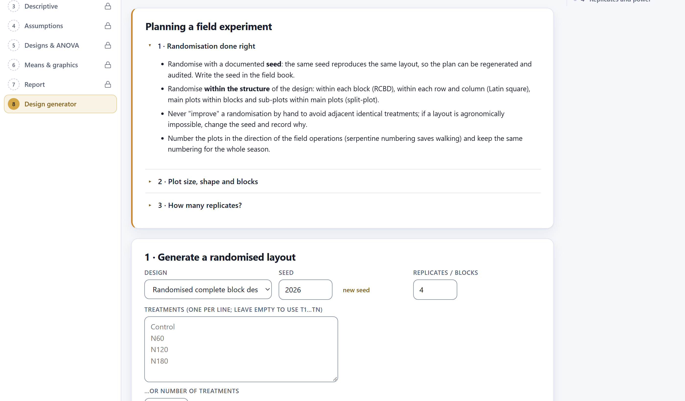
Everything the analysis can do later depends on four earlier decisions. The design, chosen according to the field and to how the treatments are applied (section 2.4). The number of replicates, calculated from the expected CV and the difference worth detecting (section 9.5). The plot: elongated in the direction of the fertility gradient, with border rows that are not harvested, and blocks laid across the gradient so that each block is uniform within. The randomisation, carried out within the structure of the design and documented with its seed. A mistake in any of these cannot be corrected on the computer.
| Aspect | Recommendation |
|---|---|
| Shape | Long, narrow plots oriented along the gradient; blocks arranged across the gradient. |
| Harvest area | Discard border rows and plot ends: for example, harvest the 2 central rows × 4 m of a plot of 4 rows × 5 m. |
| Typical size | 10 to 30 m² for cereals, 20 to 50 m² for maize; in pots, one or a few plants per pot and more replicates. |
| Protection | Guard rows around the trial and alleys between blocks to avoid interference: fertiliser drift, shading, lodging. |
The 1 · Generate a randomised layout card asks for the design, the seed and whatever that design needs: treatments, factor levels, replicates or checks. Fields that do not apply to the chosen design are hidden automatically.
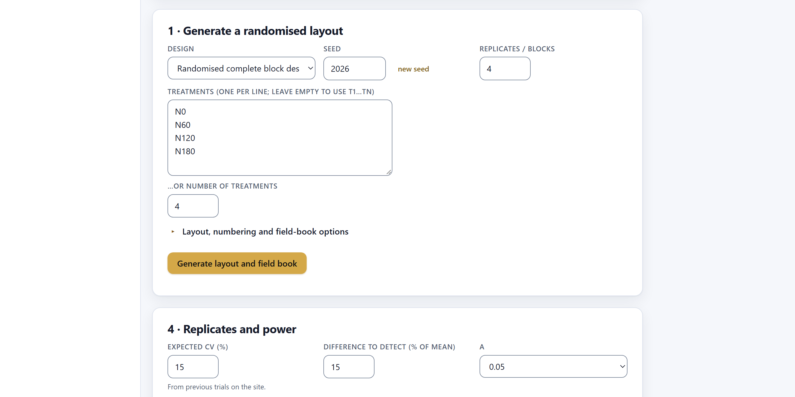
1 2 3 4 5 6| Design in the app | Inputs required | How it is randomised |
|---|---|---|
| Completely randomised design (CRD) | Treatments, replicates | All plots are shuffled together and arranged in a rectangle. |
| Randomised complete block design (RCBD) | Treatments, blocks | An independent randomisation within each block. |
| Latin square | Treatments | A cyclic square is built and its rows, columns and letter assignment are shuffled. There are as many replicates as treatments. |
| Factorial (A × B [× C]) in CRD · in RCBD | Levels of A, B and, optionally, C; replicates | The combinations are treated as treatments and randomised as in a completely randomised or a block design. |
| Split-plot in RCBD | Levels of A (main plot) and B (sub-plot), blocks | A is randomised within each block and B within each main plot, with a fresh randomisation each time. |
| Strip-plot (split-block) in RCBD | Levels of A and B, blocks | A in horizontal strips and B in vertical strips, with one randomisation per block in each direction. |
| Split-split-plot in RCBD | Levels of A, B and C, blocks | A on main plots, B on sub-plots and C on sub-sub-plots, each level randomised within the one above. |
| Resolvable incomplete blocks | Treatments, replicates, block size k | Each replicate is shuffled and cut into blocks of k plots. The number of treatments must be a multiple of k. |
| Augmented design | Checks, new entries, blocks | The entries are spread across the blocks; each block receives all the checks and is shuffled. |
A computer does not truly draw lots: it generates a sequence of numbers that looks random, starting from an initial number, the seed. The same seed always produces the same sequence and therefore the same layout. This has two advantages. The plan can be regenerated if the sheet is lost, and a reviewer or colleague can check that the layout came from a randomisation and not from a choice made by hand. The seed is written in the protocol and in the field book, which the app includes in the Info sheet of the Excel file.
| If the layout… | then… |
|---|---|
| has two neighbouring plots with the same treatment | Leave it: that is part of chance. “Improving” a randomisation by hand invalidates it. |
| is impossible in the field (irrigation that does not reach, machinery that does not fit) | Change the seed and record in the protocol the reason and the discarded seed. |
| must be repeated at another location | Use a different seed at each location and record them all. |
Never choose the seed by trying until the layout “looks right”: that is choosing the layout, not randomising it.
The Layout, numbering and field-book options drop-down controls the geometry of the layout, the way plots are numbered and the column names in the field book.
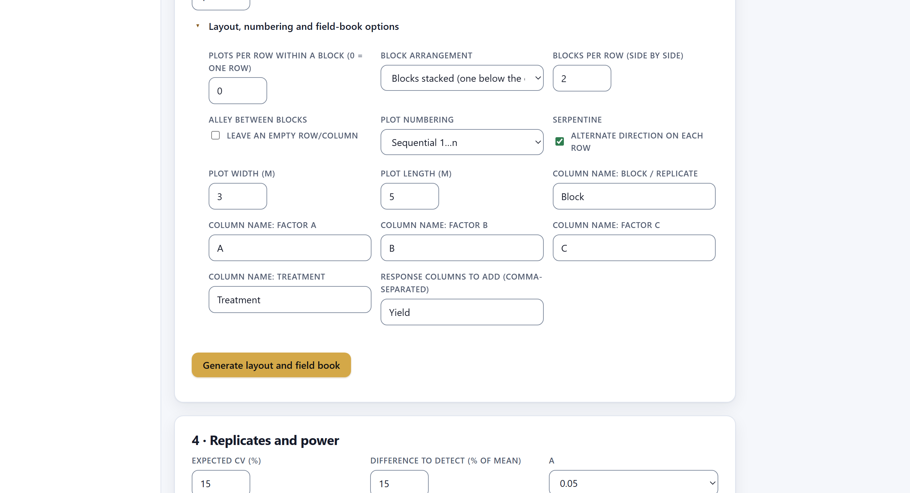
Yield, and below them the button that generates the layout and the field book.| Option | What it does |
|---|---|
| Plots per row within a block | Splits each block into rows of that number of plots; 0 puts the whole block in a single row. |
| Block arrangement · Blocks per row | Blocks one below the other, or side by side with a given number of blocks per row. |
| Alley between blocks | Leaves an empty row or column between blocks, representing an alley. |
| Plot numbering | Consecutive (1, 2, 3…) or by block (101, 102… 201, 202…). |
| Serpentine | Numbers in a zigzag: left to right in one row and right to left in the next. It saves walking when recording and harvesting. |
| Plot width · Plot length | Plot dimensions in metres, used to calculate the area of the trial. |
| Column name:… | The names of the block, factor and treatment columns in the field book. |
| Response columns to add | The empty response columns, separated by commas: Yield_t_ha, Height_cm. |
If the columns are called Block, Row and Column, Block 2 recognises them automatically when the field book is loaded. If the response carries its units in the name (Yield_t_ha), the figures and the report inherit them. It is worth settling the names here, before the field team starts recording.
Pressing Generate layout and field book brings up the 2 · Layout card with six summary tiles, the layout and the skeleton ANOVA.
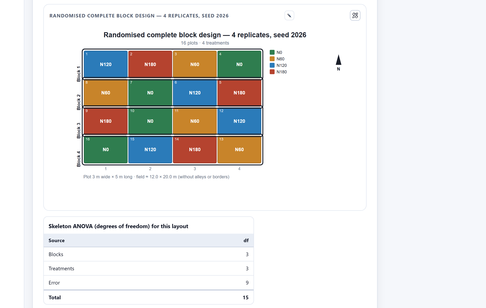
| Tile | What it shows |
|---|---|
| Plots | Number of plots and size of the grid. |
| Treatments | Number of treatments (in the augmented design, checks plus entries). |
| Replicates / blocks | Replicates; in the Latin square, equal to the number of treatments. |
| Field area | Area of the plots in hectares and dimensions of the rectangle, without borders. |
| df error | Degrees of freedom of the first error term of the design; in amber if fewer than 10. |
| Seed | The seed used, so that it can be recorded. |
| Design | Sources and degrees of freedom |
|---|---|
| Complete blocks, 4 treatments, 4 blocks | Blocks 3 · Treatments 3 · Error 9 · Total 15 |
| 5 × 5 Latin square | Rows 4 · Columns 4 · Treatments 4 · Error 12 · Total 24 |
| Split-plot, 2 × 4, 3 blocks | Blocks 2 · A (main plot) 1 · Error a 2 · B (sub-plot) 3 · A × B 3 · Error b 12 · Total 23 |
| Incomplete blocks, 9 treatments, k = 3, 3 replicates | Replicates 2 · Blocks within replicates 6 · Treatments (adjusted) 8 · Intra-block error 10 · Total 26 |
| Augmented, 2 checks, 12 entries, 4 blocks | Blocks 3 · Checks 1 · Error (from checks) 3 |
Before a single seed is spent, the skeleton ANOVA tells you whether the trial will have enough information to judge the differences. A 4 × 4 complete block design leaves 9 degrees of freedom for error, below the recommended 10 to 12. In a split-plot of 2 irrigation methods × 4 varieties with 3 blocks, irrigation will be tested with only 2 degrees of freedom (error a), even though the varieties have 12: with 2 irrigation methods, either add replicates or accept that the comparison of irrigation methods will be insensitive. The df error tile flags that first error term in amber.
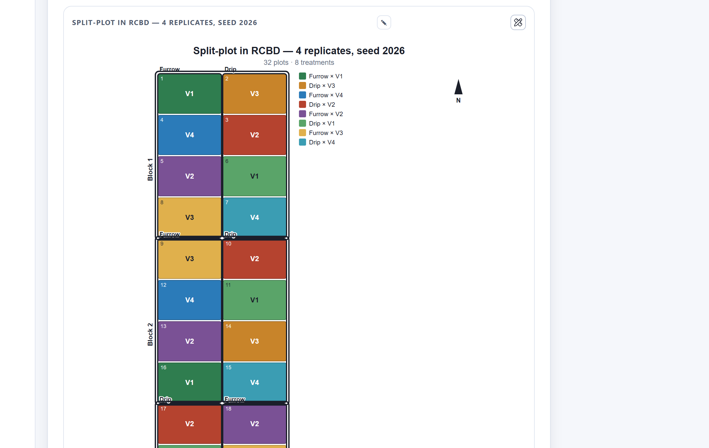
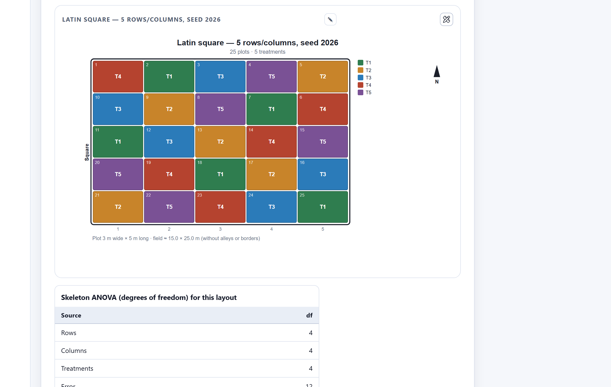
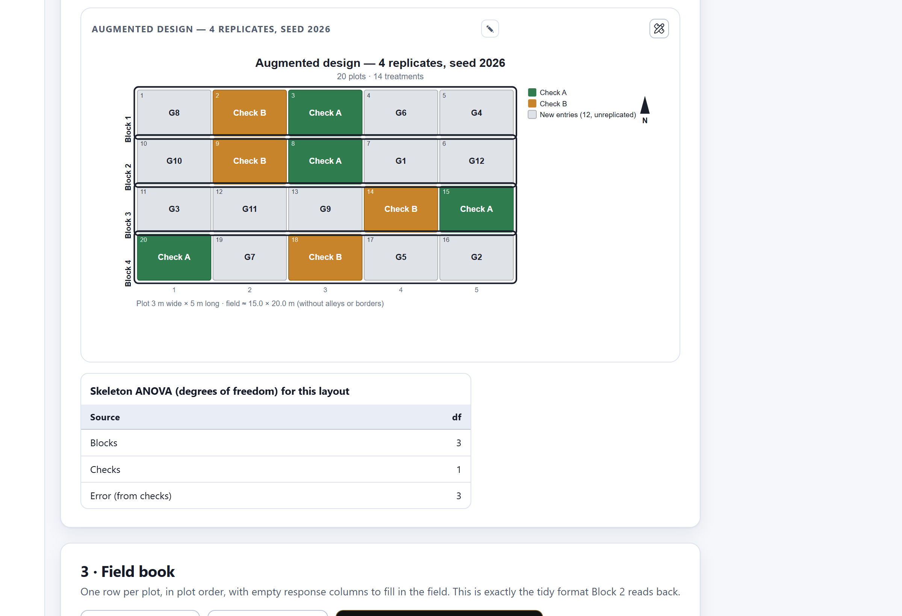
The layout is edited and exported like any other figure in the app (chapter 7). Its editor lets you choose what text each plot carries (the level, the full treatment or nothing), show or hide the numbers, the outlines of blocks and main plots, the legend, the dimensions and the north arrow, and adjust the spacing between plots. Exported as SVG or as a high-resolution PNG, it can be printed and taken to the field.
The 3 · Field book card contains one row per plot, in plot order, with the response columns left empty. It is exactly the long-format table that Block 2 reads, so the field records go straight into the analysis.
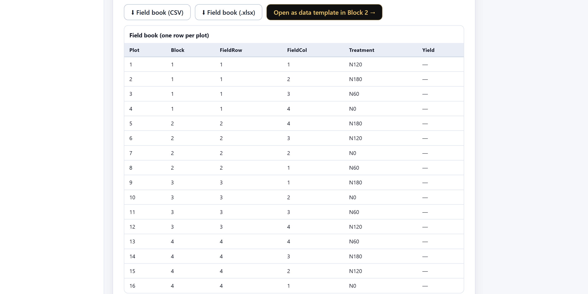
Yield. Plots 5 to 8 run along row 2 from right to left because of the zigzag numbering.| Column | Appears in… |
|---|---|
Plot | All designs. |
Block (or the chosen name) | Designs with blocks or replicates. |
IncBlock | Incomplete blocks: the block within the replicate. |
Row · Column | Latin square: row and column of the design. |
FieldRow · FieldCol | The other designs: position of the plot in the grid of the layout. |
A · B · C | Factorials, split-plots and strip-plots. |
Treatment | All: the treatment or the combination. |
Type | Augmented: check or entry. |
| Responses | The columns typed in Response columns to add, empty. |
| Button | What it does |
|---|---|
| Field book (CSV) | Downloads the field book as comma-separated text. |
| Field book (.xlsx) | Downloads an Excel workbook with two sheets: the field book and Info, with the design, the seed, the replicates and the date. |
| Open as data template in Block 2 | Loads the field book into Block 2 without downloading it, to check that its structure is the one that will be analysed. |
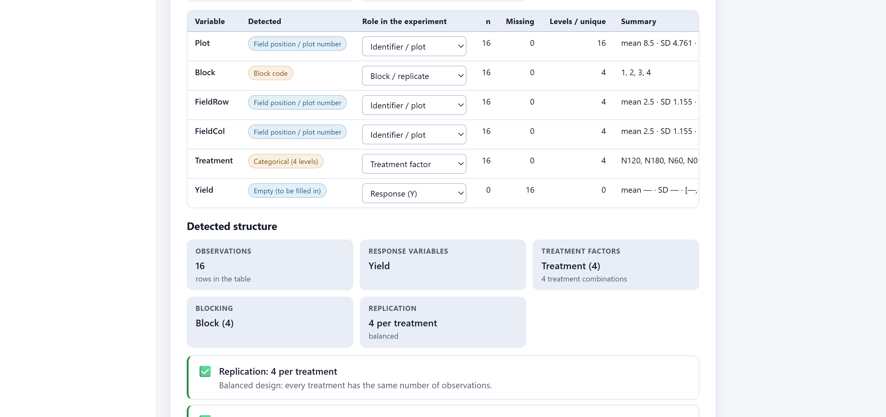
Block as the block, Treatment as a factor and Yield as an empty response. The detected structure is already that of a balanced randomised complete block design; only the yield remains to be entered.The 4 · Replicates and power card answers two complementary questions: how many replicates are needed to detect a given difference, and what difference can be detected with the replicates you can afford. It is recalculated whenever any input changes.
Power is the probability that the trial declares significant a difference that really exists. It depends on three things: the difference to be detected, expressed as a percentage of the mean; the variability of the trial, measured by the CV; and the replicates. The app calculates the power of the comparison between two treatment means with a t-test that uses the error degrees of freedom of the design. The required number of replicates follows from r ≥ 2 (tα/2 + tβ)² (CV / d)², solved iteratively because the t values depend on the degrees of freedom. The formula yields the most useful rule of the block: halving the CV is equivalent to quadrupling the replicates.
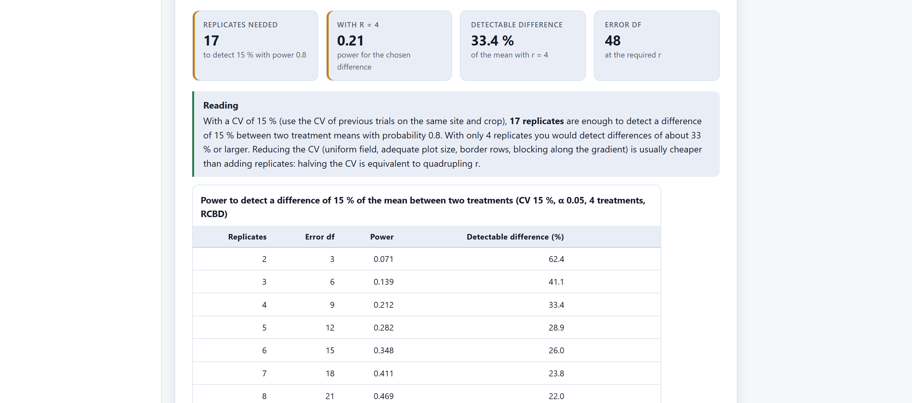
| Field | What to enter |
|---|---|
| Expected CV (%) | The ANOVA CV from earlier trials at the same site and with the same crop; Block 5 reports it. |
| Difference to detect (% of mean) | The smallest difference that would matter agronomically or economically. |
| α · Target power | Significance level (0.05) and target power (0.80 is usual; 0.90 for expensive trials or important decisions). |
| Number of treatments · Design | They determine the error degrees of freedom: (t − 1)(r − 1) in blocks, t(r − 1) in a completely randomised design. |
| Replicates you can afford | The replicates that the budget or the land allow, to see their power and their detectable difference. |
| CV of the trial | 10% difference | 15% difference | 20% difference |
|---|---|---|---|
| 5% | 5 | — | — |
| 8% | — | 6 | — |
| 10% | 17 | 8 | — |
| 15% | 36 | 17 | — |
| 20% | — | — | 17 |
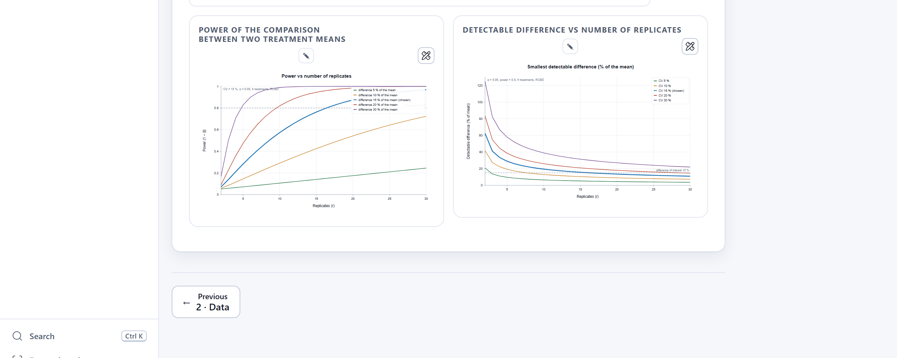
| If the replicates required… | then… |
|---|---|
| fit the land and the budget | Sow at least that many, and check that the skeleton ANOVA leaves 10 to 12 degrees of freedom for error. |
| are twice as many as possible | Work on the CV (plots, borders, blocks) or reduce the number of treatments: fewer treatments well tested are worth more than many poorly tested. |
| are far more than possible | Accept a larger detectable difference and state it in the protocol, or redesign the trial across several locations or seasons. |
| cannot be calculated (more than 200) | The difference of interest is too small for that CV; there is no point in sowing the trial that way. |
An underpowered trial is no saving: if it finds no differences, there is no way to tell whether there are none or whether it could not see them.
The calculator answers for the comparison between two treatments with a t-test, which is the practical question in most trials. Mean-separation tests that control the familywise error rate (Tukey, Bonferroni) are more demanding, so with them it is advisable to add one or two replicates to what the calculator indicates, especially with many treatments.
Yield_t_ha as the response.A good trial is decided before sowing: the design by the field, the replicates by the CV and the difference that matters, and the layout by a randomisation documented with its seed. The layout and the skeleton ANOVA show in advance whether the analysis will have enough to work with, and the field book ensures that the data reach Block 2 in the right format.
This chapter completes the tour of the eight blocks. For quick reference, the appendices bring together the file formats, the decision rules of the whole manual, an English–Spanish glossary and solutions to the most frequent problems.